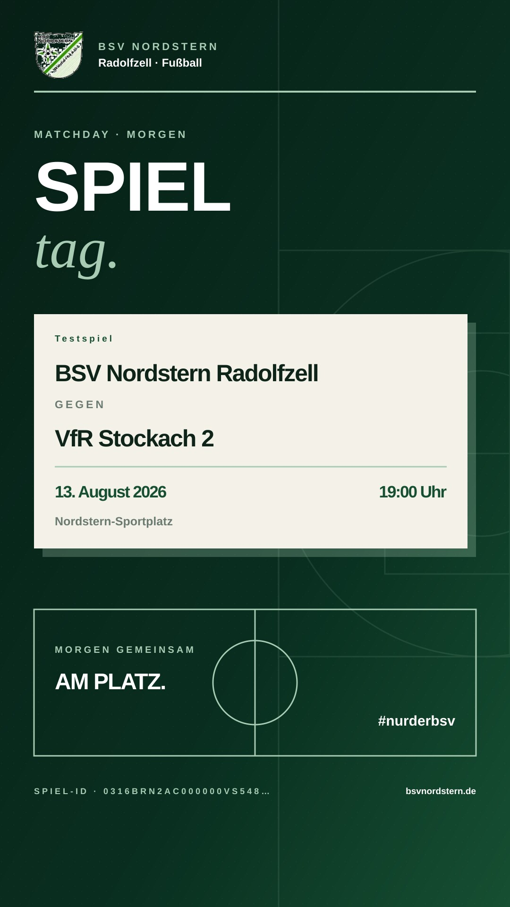
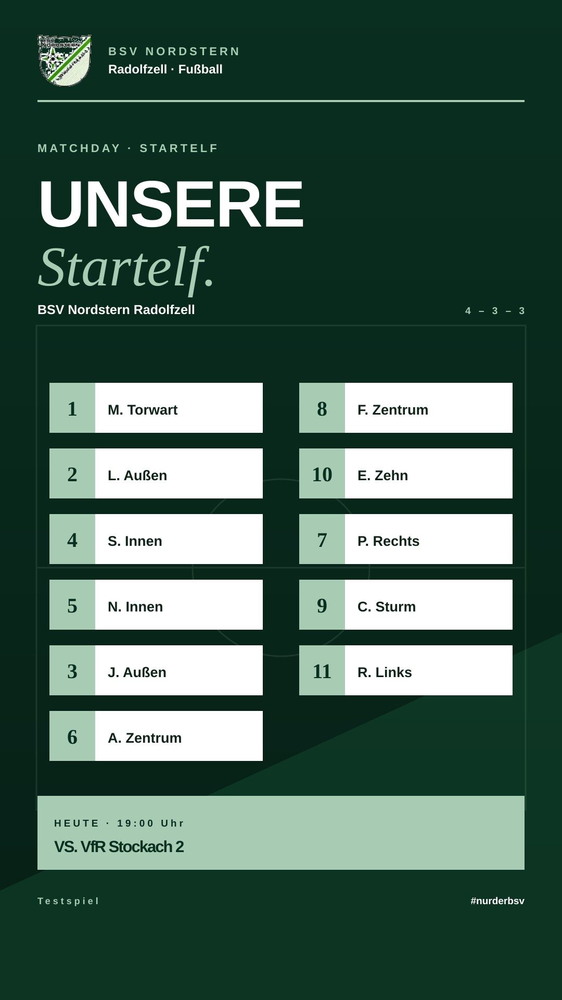
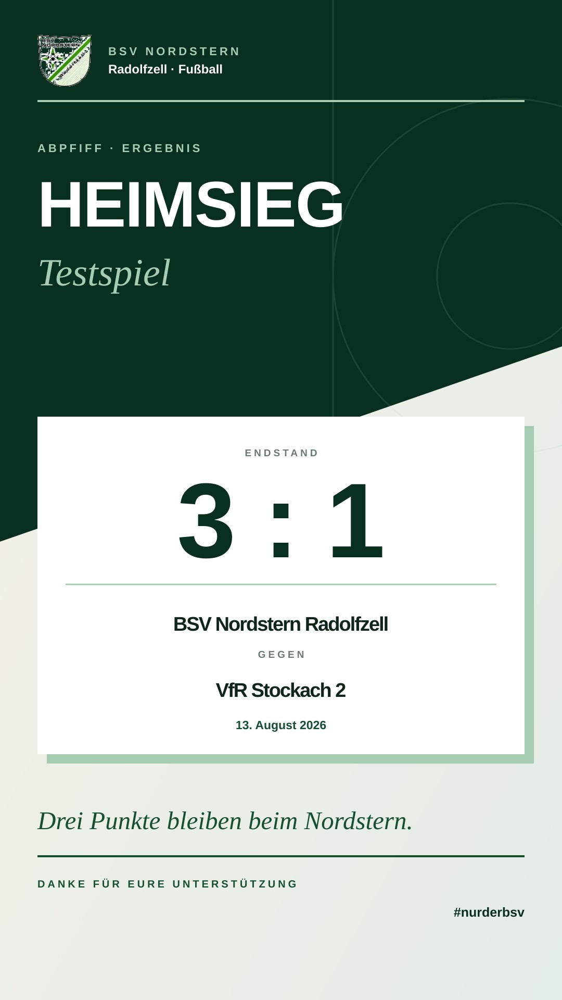

INTER BLACK
Für Fakten, Teamnamen, Ergebnisse und Handlungsaufforderungen.
Das visuelle System der Website, übertragen auf automatisierbare Social-Media-Formate: grün, klar, sportlich und mit viel Raum für echte Vereinsgeschichten.
#071f16#092f20#164f32#a8cbb4#f4f1e8Für Fakten, Teamnamen, Ergebnisse und Handlungsaufforderungen.
Als gezielter emotionaler Akzent – niemals für Pflichtinformationen.


